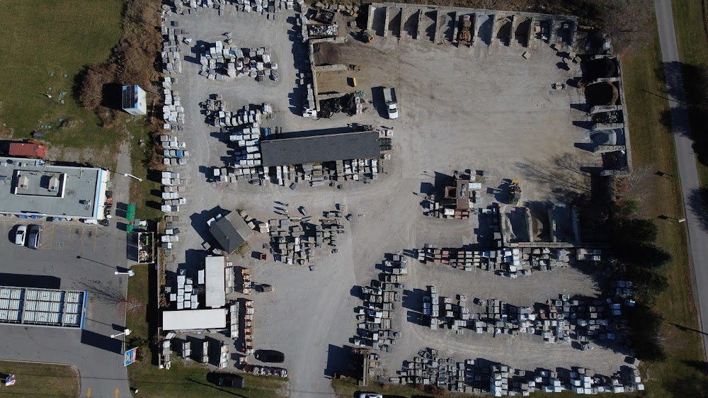

777Stone Inc. is a premium natural stone and landscaping materials supplier based in Sharon, Ontario. When they first partnered with Connectify Media, their online presence was minimal — a great product with almost no digital footprint to show for it.
Over six months, we built their brand story from the ground up: producing high-quality content, running targeted digital campaigns, and connecting them to their community through curated events. The result was lead growth approaching 100 times their original baseline — driven entirely by organic strategy, not paid ads.
Stone and landscaping is a referral-heavy industry. Most businesses rely on word of mouth and don't invest in digital — which creates an enormous opportunity for those who do. 777Stone had the product quality to compete at the highest level, but no content strategy, no consistent social presence, and no community visibility.
Our job was to change all three.
We focused on three pillars: content that built credibility, digital campaigns that expanded reach, and events that created real-world community connection.
On the content side, we developed a consistent production cadence of short-form video and photography that showcased their materials and completed projects. Each piece was designed to build brand trust and educate potential buyers — turning 777Stone's Instagram and social channels into a genuine lead generation engine.
For digital marketing, we built and executed targeted campaigns across social platforms, reaching homeowners, contractors, and landscaping professionals across York Region. Every campaign was measured and iterated — optimizing for lead quality, not just reach.
And through event curation, we gave 777Stone a physical presence in the communities they serve — connecting them face-to-face with potential customers and partners in a way no digital campaign can replicate.
A curated launch event introducing 777Stone's showroom to the Sharon community. We handled full event production, on-site content capture, and post-event digital distribution — generating significant local awareness right from day one.
A community BBQ that invited local homeowners, contractors, and neighbours to the 777Stone yard for a relaxed afternoon of food, connection, and conversation. An authentic way to build community trust and generate genuine leads in the local market.
Co-hosted with Connectify Media, this hands-on workshop taught local contractors how to use AI tools for quoting, email writing, website building, and social media — positioning 777Stone as a thought leader in the industry and a genuine community resource.
"Working with Connectify has completely changed how we show up online. We went from nobody knowing who we are to getting daily inquiries from people who found us on social media. The growth has been unreal — and it's all been real, organic customers who actually want what we offer."
A selection of short-form content produced for 777Stone's social channels — the same reels that drove their organic lead growth.
Nearly 100× organic lead growth in 6 months — no ad spend required. Let's talk about what that looks like for your brand.
Start a Conversation